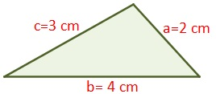

Un triangulo escaleno es un triangulo en el cual los tres lados tienen longitudes diferentes. Tambien los angulos de un triangulo escaleno tienen diferentes medidas. Algunos triangulos rectangulos pueden ser un triangulo escaleno cuando los otros dos angulos o los catetos no son congruentes.